Experience and Excellence

Our approach starts with world-class staff and instructors. We are educators who care deeply about excellence in language education and the relationships formed through service of our students. Our school attracts the finest English language instructors in the Washington, D.C. metro area, and we do everything that we can to support them in their efforts. Our staff is deeply experienced and will offer you advice about which programs might make sense for you, and our instructors are all certified or have been teaching the English language to international students for many years.
We do not have significant hiring needs, but we always want to meet people with a great English language teaching and international service background and do have needs to add people from time to time. For more information regarding what we look for and requirements for our staff, see here. We look forward to meeting you soon!
Staff Biographies
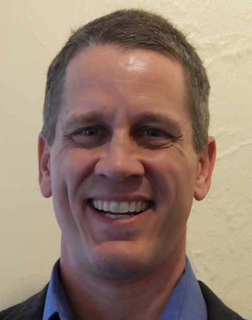
Paul Boesen is the Managing Director of English Now! Paul's background in education includes experience in international program development and administration, as well as university admissions and enrollment management. Prior to his career in education, Paul worked in investment banking and private equity for the Goldman Sachs Group in New York, Frankfurt, and Singapore; and for the World Economic Forum in Geneva and Beijing. Paul's academic background is in economics, Asian studies, and law, and he is a graduate of the University of Michigan and Harvard Law School. In addition to his work at English Now!, Paul also serves as Senior Advisor to the GreenPoint Group, a Washington, D.C. and Beijing-based strategic advisory firm that connects people and resources between the United States and China. Paul was also the first Executive Director of (and still serves as a Special Advisor to) the US-China Education Trust, a Washington-based non-profit organization whose mission is to promote US-China relations through education and exchange for China's next-generation leaders. He serves as the Chairman of the ESOL Advisory Committee of the Falls Church City Public Schools in Falls Church, Virginia, and on the Steering Committee of the Million Strong Initiative, a Presidential Initiative to promote Chinese language education in American K-12 schools.
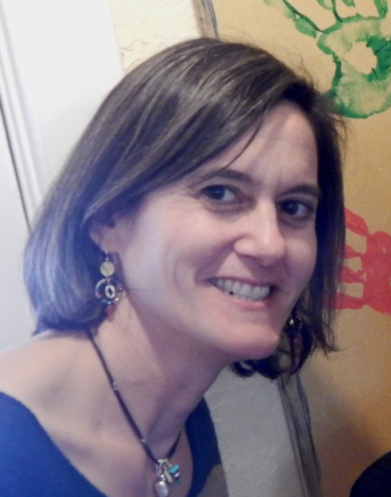
Jennifer Kagan serves as Director of Program Development and leads the development of our Intensive English Program as well as other programs. Jennifer enjoys working with English language learners of all backgrounds. She is an active parent volunteer in Montgomery County Public Schools, organizing events of interest to new and international families. Jennifer began teaching English as a Second Language while working as an elementary school teacher in Los Angeles through Teach For America. In addition to her teaching experience, she has worked for education-focused businesses, developing teacher support materials and leading teacher workshops. Jennifer is a native of Boston and a graduate of the University of Pennsylvania with a Bachelor of Arts in American History. She is conversant in Spanish and has studied Japanese. When she's not teaching English, Jennifer enjoys biking, playing Scrabble, and spending time with her family.
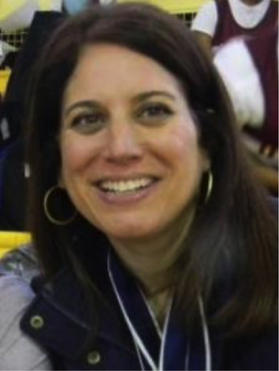
Susan Kay is an English Language Instructor, serves as English Now!'s Community Service Advisor advising students on how to get involved in community service, and is the Founder of the Expat Spouse Initiative, which organizes events to serve expatriate spouses in the Washington, D.C. international community. Susan's path to international education and English language teaching began when she was an attorney for the Legal Aid Society in New York City for a largely immigrant population in need of representation and assistance navigating the complicated legal system. When she first moved to Washington, D.C., she worked as an attorney for the Federal Election Commission monitoring the public funding of Presidential campaigns, but later decided to focus again on helping people conquer language barriers. She volunteered at the Washington English Center, where she taught students from countries all over the world who were trying to obtain U.S. citizenship. After returning to school and completing Georgetown University's TEFL program, she taught students in a private language school and at the Arlington County Public Schools' REEP program for adult immigrants. Susan has a B.A. from Barnard College, Columbia University and a J.D. from the George Washington University Law School. She lives in Washington, D.C. with her husband and two sons.
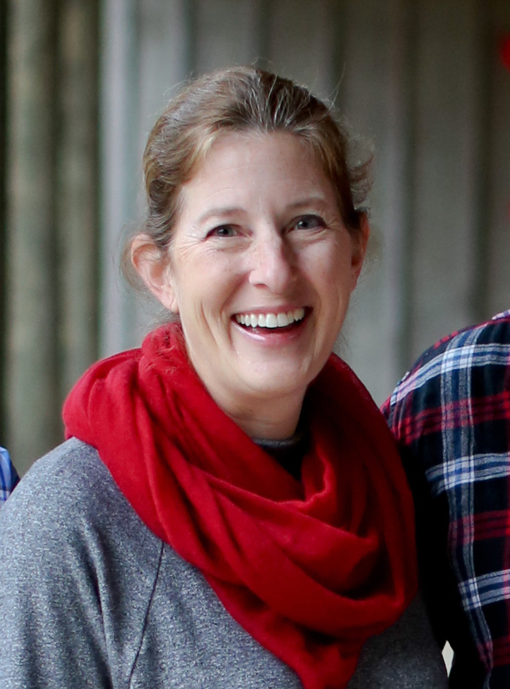
Nell Dillard is English Now!'s Director of Finance & Operations. Nell is originally from Atlanta, Georgia, but after attending college in Virginia, she knew this was where she wanted to settle down. Nell is a graduate of the College of William & Mary. She initially worked for several small trade associations and then for Andersen Consulting (Accenture), where she met her husband, Matthew. It was only 10 years ago when her husband decided to start his own business that she decided to try her hand at bookkeeping. Nell and her husband have two sons, and the older of the two is now studying at her alma mater. Nell has found many volunteer opportunities in her community through her sons. She has been actively involved in their high school drama and orchestra programs and supports their Boy Scout troop as well. Nell rarely has any free time, but when she does, she loves to travel, read, and watch movies. Nell and her family live in Falls Church, Virginia.
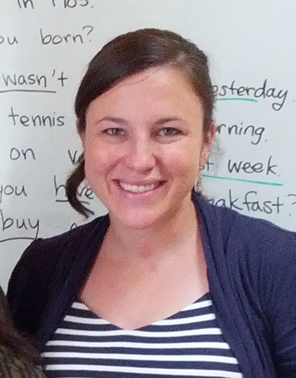
Anna Green (on leave) serves as an English Language Instructor and Student Services Manager at English Now!. Anna has a longstanding interest in education and youth development. She has served as a guide at Historic St. Mary's City in Southern Maryland and later as a volunteer in youth development in the Peace Corps. Anna's work at English Now! has included teaching youth as well as adult students. She has taught in our Intensive English Program, other group classes, and in tutorials with both adults and youth students of all levels. Anna is a graduate of Washington College. While at university, she also studied abroad at University College Cork. Outside of English Now!, Anna is a proud new parent!
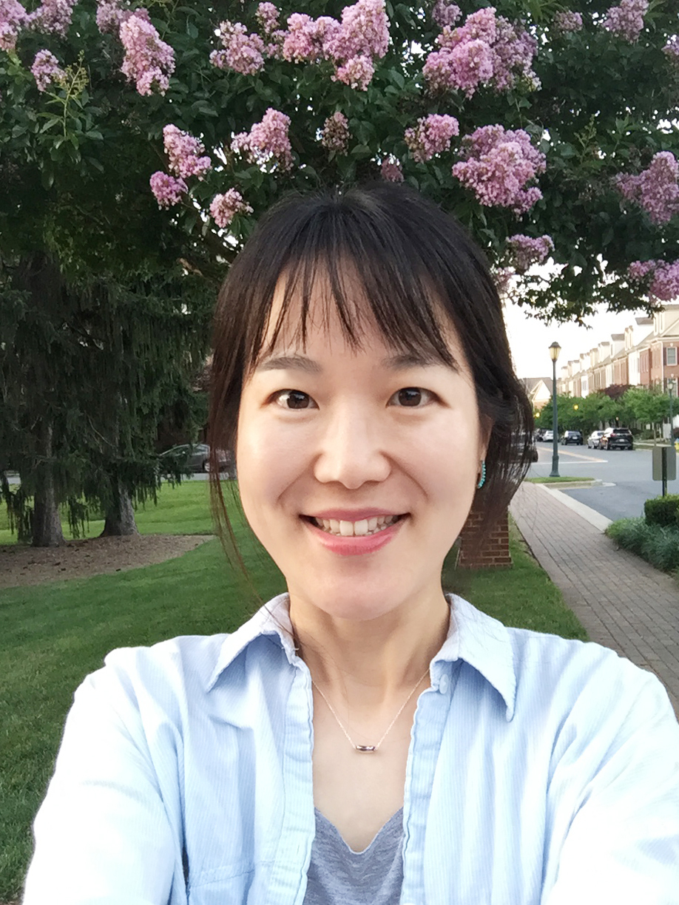
Nayoung Lee serves as a graphic designer at English Now! and is responsible for much of the beauty in the school’s design and communications. Nayoung developed her passion and expertise in graphic design during seven years of professional experience at a design agency and a publishing company. She received a B.A. in fashion design from Myeongji University, Korea, where she also earned her Master’s degree in graphic design. Nayoung is also enthusiastic about learning English. She loves trying new recipes from diverse cultures as well as reading books. Nayoung enjoys hiking with her husband in her free time.
Frances Williams serves as a Community Relations Manager & English Language Instructor. Originally from Scotland, Frances graduated from Dunfermline College in Edinburgh with a Bachelor's degree in Education. Her childhood dream of travelling overseas was fulfilled when she got her first job teaching in Ghana. Later, while teaching in India, she met her husband-to-be, a State Department Foreign Service Officer. Together, with their son and several ever-changing, rescued street dogs, they have been on the move ever since! Frances has taught in International schools in Copenhagen, Curacao, Damascus, Havana and Santiago as well as private and public schools in Montgomery County. While teaching overseas, Frances was involved in organizing many “Week Without Walls” and outreach programs for her students, which were designed to give them experiences that would inspire them to become caring, global citizens. Her most memorable one was when she took 20 middle school students camel trekking into the Syrian Desert to live among Bedouin families. In addition to working at English Now!, Frances also manages an after-school homework club at a youth center. There, she tutors a diverse group of middle and high school students in Social Studies and Language Arts. In her spare time she plays tennis, plays clarinet in a band and takes care of her three bi-lingual dogs!
Instructor Biographies
 Margaret Whitman Blair ("Peggy") has been a journalist as well as an author, and she has taught English as a foreign language in Japan and with the Peace Corps in Thailand. Her novels include a series of Civil War time-travel books: Brothers at War, House of Spies, and The Sand Castle. She also writes history books for The National Geographic including The Roaring 20: The First Cross-Country Air Race for Women which received the 2007 Peace Corps Writers Award for Best Children's Writing. Currently in the works are a black history book and a novel set in colonial Williamsburg. For the past decade, she has taught a workshop in Writing the Historical Novel at The Writer's Center in Bethesda, Maryland, and has lectured on the subject for Smithsonian Associates. She is active in The Children's Book Guild of Washington, DC. Peggy received both her B.A. and her M.A. from American University.
Margaret Whitman Blair ("Peggy") has been a journalist as well as an author, and she has taught English as a foreign language in Japan and with the Peace Corps in Thailand. Her novels include a series of Civil War time-travel books: Brothers at War, House of Spies, and The Sand Castle. She also writes history books for The National Geographic including The Roaring 20: The First Cross-Country Air Race for Women which received the 2007 Peace Corps Writers Award for Best Children's Writing. Currently in the works are a black history book and a novel set in colonial Williamsburg. For the past decade, she has taught a workshop in Writing the Historical Novel at The Writer's Center in Bethesda, Maryland, and has lectured on the subject for Smithsonian Associates. She is active in The Children's Book Guild of Washington, DC. Peggy received both her B.A. and her M.A. from American University.
Elizabeth Boesen consults with students on Myers Briggs Type Indicator (MBTI) assessments. Elizabeth is a career coach focusing on International Government & Policy, Diplomacy, Intelligence, and International Development, at The George Washington University. She has taught ESOL at Phillips Academy Andover and is a self-described "grammar geek." She is a certified (Interchange Institute) cross-cultural trainer, and also a certified (Myers & Briggs Foundation) Myers Briggs Type Indicator (MBTI) trainer. She has lived, studied and worked on three continents and in five countries, and is fascinated by language, cultural differences/similarities, and human development. Elizabeth has a background in international development, having worked as Regional Director-Asia for the International Youth Foundation, and as a member of the U.S. grantmaking team at Ashoka. Elizabeth has a B.A. in Political Science from the University of Chicago and an M.A. in International Relations from the Institut d'Hautes Etudes Internationales of the University of Geneva in Switzerland. She resides in Falls Church, Virginia, with her husband and three children.
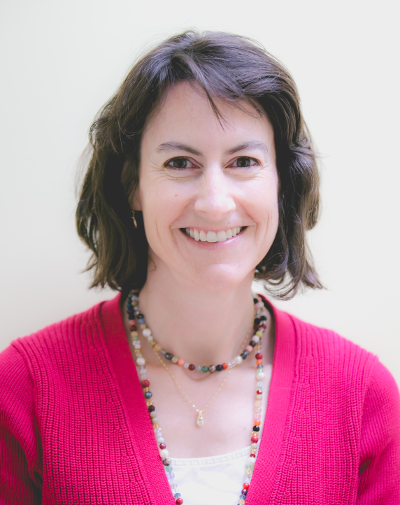
Kathy Philpott Costa is enthusiastic about teaching English to students of all levels and backgrounds. A Colorado native, outdoor enthusiast and former international business lawyer, she returned to her passion for language learning after spending years studying and working in Europe, Brazil, and the U.S. and actively volunteering in her children's schools. She received a B.A. in French from Colgate University, a J.D. from William & Mary Law School, an LL.M. from the University of London, and more recently, a TEFL Certificate from Georgetown University. Kathy has always sought opportunities to tutor adults in English and to continue her own process of learning Portuguese, French, and Spanish. Having experienced the challenge of learning second languages in other countries, she has a deep appreciation of people from different cultures and linguistic backgrounds and identifies keenly with adults learning the language and culture of the U.S. Kathy teaches in English Now!'s Conversation Course program as well as in tutorial lessons with adult students. Kathy is married to a Brazilian, and her family speaks both English and Portuguese at home.
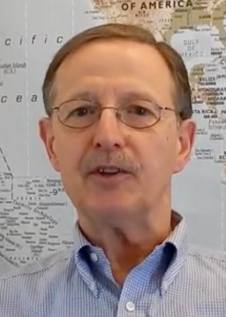
Michael David teaches ESOL chiefly to students at the high intermediate and advanced levels. He is English Now!'s lead instructor in Business English and focuses on Business English and sales as well as TOEFL preparation. His work experience in the business context enables him to understand the English language and cultural requirements of international residents of the area, in a U.S. business environment. He has helped many adult professional students and TOEFL prep students achieve their goals in ESOL. A graduate of Hobart & Wm Smith Colleges, Michael first served in the US Air Force and then had a successful career in business-to-business sales. Following several decades of working in business, Michael decided to pursue a career teaching ESOL. He then earned a certificate from Lado International College in teaching English as a foreign language. Michael lives in Takoma Park, Maryland. Outside of his teaching, Michael enjoys antique automobiles, vintage western swing and country music, cooking, reading, and politics.
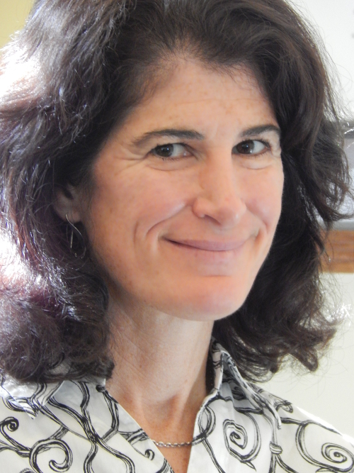
Marian DeAngelo is originally from Bethesda, Maryland. She teaches in English Now!'s Conversation Course program and teaches adults as well as K-12 students, including in classes taught at area private schools. Marian earned her B.A. degree in Psychology from Syracuse University and her M.A. in Industrial/Organizational Psychology from Xavier University. After moving, with her husband, from the D.C. area to San Diego, Marian continued her education and earned her teaching certification. She then taught multiple subjects at the elementary school level in both San Diego and Denver, until moving to Deutschey where Marian began teaching English at the corporate and high school levels. Marian feels great reward in seeing her students progress and become confident in speaking aloud. In her free time, Marian enjoys hiking, biking, skiing, horseback riding, fitness and continuing education classes, traveling, bird watching, movies, music, cooking and getting together with friends.
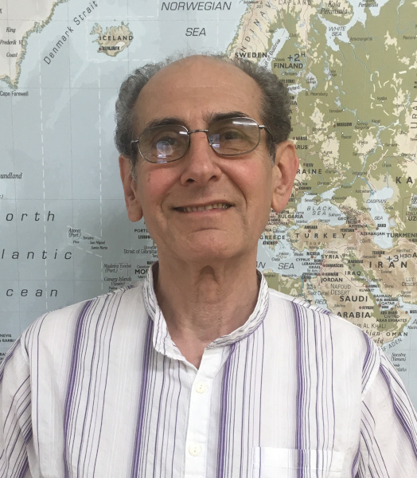
Mack Emsellem was born in Washington D.C. to well-traveled parents. His home was always filled with the cadences and harmonies of multilingual conversations. The path to his 15-year career as a teacher of English as a second language includes a B.A. in American Studies from George Washington University, a Master of Education degree from the University of Bridgeport, and a TOEFL teacher’s certificate from Lado Institute. Life stories underlie biographies. Interests and career pursuits led Mack to continuing studies in computer science, video production, screenplay writing, security systems, sales, yoga, and fractal designs. Years of travel and moving to new locations taught him to pay attention to details and keep an open mind. Then he met and married his kindred spirit, Juliet, who had spent ten years living and working in Asia. In addition to teaching at English Now!, Mack is a volunteer English instructor for refugees through the International Rescue Committee. His communicative lessons invite students to describe developments in their lives. Although it benefits the students greatly, discussions about their new adventures, everyday experiences, and future ambitions have broadened him as well. Regions of countries have their own distinct character, and each city, town or neighborhood he visited was the center of someone’s marvelous universe. Sharing personal experiences with his international students continually expands the cultural horizons of Mack's world. Mack has also recently focused on the development of lessons that connect English studies to conservation and the environment, an issue that should concern us all.
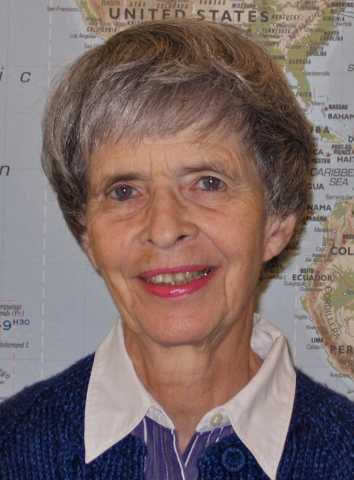
Margareta Feller came to English Now! after retiring from a 30-year career in the Federal Government. She teaches in English Now!'s Conversation Course program and works with students in private lessons. A major part of her work with the government was as a foreign language teacher teaching Swedish and English. Margareta first came to the United States from Sweden as a college student after having studied English since middle school. She obtained her B.A. majoring in French at Wheaton College in Massachusetts and later earned an M.A. in linguistics at American University. Language teaching has always been Margareta's passion. Now that she is retired she would like to help students who want to learn English or improve their English proficiency to feel more at home in American culture.
Anna Green (on leave) serves as an English Language Instructor and Student Services Manager at English Now!. Anna has a longstanding interest in education and youth development. She has served as a guide at Historic St. Mary's City in Southern Maryland and later as a volunteer in youth development in the Peace Corps. Anna's work at English Now! has included teaching youth as well as adult students. She has taught in our Intensive English Program, other group classes, and in tutorials with both adults and youth students of all levels. Anna is a graduate of Washington College. While at university, she also studied abroad at University College Cork. Outside of English Now!, Anna is a proud new parent!
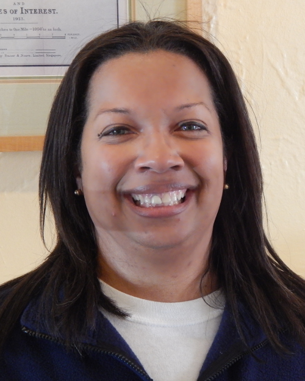
Alisa Harris is a native Washingtonian who grew up in suburban Maryland. She received her B.A. from the University of Virginia and worked in business for several years in New York City and in Washington D.C. before pursuing her love of teaching. Alisa earned her Master's degree in Early Childhood and Elementary Education from Trinity University of Washington and then worked for almost ten years as a teacher with Montgomery County Public Schools (MCPS) in Maryland. She later returned to Trinity and earned a second Master's degree in Counseling, while continuing to work part-time as a regular ESOL substitute teacher with MCPS and as an English Instructor to children, teenagers and adults at English Now! Alisa currently teaches early childhood grades at an independent private school in Bethesda, Maryland and continues to teach English to students of all ages at English Now! Alisa resides in Silver Spring, Maryland. In her spare time, she enjoys traveling, reading, playing word games and spending time with family and friends.
 Amy Hansberger works with students of all ages. Amy enjoys focusing on students' speaking skills as well as cross-cultural training, reflecting her background in French language teaching and cross-cultural studies as well as ESL. Amy taught initially for over 20 years in the Chicago area but has recently relocated to Bethesda. She enjoys sharing her commitment to linguistic proficiency with students in both English and French with students in the greater Washington, D.C. area (and sometimes beyond via lessons taught online!). Amy's enthusiasm for languages began as a result of having immigrant parents, family located around the world, and work in international student exchange programming. She has studied Graphic Design & French Literature and pursued continuing education with professional organizations such as the AATF (American Association of Teachers of French) and ACTFL (American Council on the Teaching of Foreign Languages). Here in the Washington D.C. area, Amy is affiliated with American Councils on International Education, where she volunteers and is licensed as an evaluator of incoming students on J-1 and F-1 visa programs. Amy enjoys using curriculum that invites students to deeper understanding of cross-cultural perspectives & life skills, as well as English for use in dynamic presentations and negotiations. Amy resides in Bethesda, Maryland.
Amy Hansberger works with students of all ages. Amy enjoys focusing on students' speaking skills as well as cross-cultural training, reflecting her background in French language teaching and cross-cultural studies as well as ESL. Amy taught initially for over 20 years in the Chicago area but has recently relocated to Bethesda. She enjoys sharing her commitment to linguistic proficiency with students in both English and French with students in the greater Washington, D.C. area (and sometimes beyond via lessons taught online!). Amy's enthusiasm for languages began as a result of having immigrant parents, family located around the world, and work in international student exchange programming. She has studied Graphic Design & French Literature and pursued continuing education with professional organizations such as the AATF (American Association of Teachers of French) and ACTFL (American Council on the Teaching of Foreign Languages). Here in the Washington D.C. area, Amy is affiliated with American Councils on International Education, where she volunteers and is licensed as an evaluator of incoming students on J-1 and F-1 visa programs. Amy enjoys using curriculum that invites students to deeper understanding of cross-cultural perspectives & life skills, as well as English for use in dynamic presentations and negotiations. Amy resides in Bethesda, Maryland.
 Maribeth Hoath-Perez discovered her love of languages and cultures years ago when she enrolled in an American Sign Language class on a whim. This led to an immersion experience in ASL and Deaf Culture Studies at Gallaudet University, followed by a job at the Deaf Advocacy Agency just outside of San Francisco. A few years later, after earning her M.S.W. at UC-Berkeley, she spend several years volunteering at a house of hospitality for Central American refugees where she picked up Spanish and met her husband, a recent immigrant from Guatemala. In the years since, Maribeth has volunteered in Mexican prisons and on the Navajo reservation in Arizona. She has worked as an emergency room social worker, a Spanish interpreter/translator, and a professor of translation studies at the post-secondary level in Guatemala. Most recently, she taught English in Spain for three years while living in Madrid with her husband and their two adolescent children. Her ESOL students ranged from an archeologist studying ancient Roman coins to an engineer designing the high speed train joining Mecca and Medina! After seeing the impact learning English has had on her husband's life as well as the impact learning Spanish has had on her own life, Maribeth is enthusiastic about helping students take their English to the next level!
Maribeth Hoath-Perez discovered her love of languages and cultures years ago when she enrolled in an American Sign Language class on a whim. This led to an immersion experience in ASL and Deaf Culture Studies at Gallaudet University, followed by a job at the Deaf Advocacy Agency just outside of San Francisco. A few years later, after earning her M.S.W. at UC-Berkeley, she spend several years volunteering at a house of hospitality for Central American refugees where she picked up Spanish and met her husband, a recent immigrant from Guatemala. In the years since, Maribeth has volunteered in Mexican prisons and on the Navajo reservation in Arizona. She has worked as an emergency room social worker, a Spanish interpreter/translator, and a professor of translation studies at the post-secondary level in Guatemala. Most recently, she taught English in Spain for three years while living in Madrid with her husband and their two adolescent children. Her ESOL students ranged from an archeologist studying ancient Roman coins to an engineer designing the high speed train joining Mecca and Medina! After seeing the impact learning English has had on her husband's life as well as the impact learning Spanish has had on her own life, Maribeth is enthusiastic about helping students take their English to the next level!
Erin Hutcheson started her career in education as an elementary school teacher, after serving as a Peace Corps volunteer in Peru. In addition to teaching at English Now, Erin also works as a survey statistician at the Census Bureau. Erin has a B.A. from Berry College in International Relations. She has earned two graduate degrees, one in ESL education from George Washington University, and the other in Public Policy from Georgetown University.
Jennifer Kagan serves as Director of Program Development and leads the development of our Intensive English Program as well as other programs. Jennifer enjoys working with English language learners of all backgrounds. She is an active parent volunteer in Montgomery County Public Schools, organizing events of interest to new and international families. Jennifer began teaching English as a Second Language while working as an elementary school teacher in Los Angeles through Teach For America. In addition to her teaching experience, she has worked for education-focused businesses, developing teacher support materials and leading teacher workshops. Jennifer is a native of Boston and a graduate of the University of Pennsylvania with a Bachelor of Arts in American History. She is conversant in Spanish and has studied Japanese. When she's not teaching English, Jennifer enjoys biking, playing Scrabble, and spending time with her family.
Susan Kay is an English Language Instructor, serves as English Now!'s Community Service Advisor advising students on how to get involved in community service, and is the Founder of the Expat Spouse Initiative, which organizes events to serve expatriate spouses in the Washington, D.C. international community. Susan's path to international education and English language teaching began when she was an attorney for the Legal Aid Society in New York City for a largely immigrant population in need of representation and assistance navigating the complicated legal system. When she first moved to Washington, D.C., she worked as an attorney for the Federal Election Commission monitoring the public funding of Presidential campaigns, but later decided to focus again on helping people conquer language barriers. She volunteered at the Washington English Center, where she taught students from countries all over the world who were trying to obtain U.S. citizenship. After returning to school and completing Georgetown University's TEFL program, she taught students in a private language school and at the Arlington County Public Schools' REEP program for adult immigrants. Susan has a B.A. from Barnard College, Columbia University and a J.D. from the George Washington University Law School. She lives in Washington, D.C. with her husband and two sons.
 Linda La Pierre is an educator and artist with more than ten years of experience teaching English to adults from all over the world. She has worked in a variety of educational settings both here and abroad, including college-level Intensive English Programs, a community ESL program for adult immigrants, and a private language school where she taught ESL to the spouses of foreign diplomats. She has also created individualized ESL classes as a private tutor for international visiting professionals. Linda studied Community Service Education and Applied Linguistics at the graduate level at Cornell University, and completed a Bachelor's Degree in Spanish at Emmanuel College in Boston. In addition to Spanish, she has studied French, Polish, Serbo-Croatian, and Portuguese; she has lived and worked in France, Serbia, Poland, and Spain. Previous work experience has also included positions in the fields of media production and community outreach. As a painter, Linda has worked in dry pastel, watercolor, and acrylic. She is currently experimenting with stop-action animation using a digital camera and personal computer. Linda lives with her family in Northern Virginia. In addition to her work teaching in our Conversation Course program as well as private lessons, Linda serves as our Director of Student Engagement, leading initiatives to help English Now! serve our students better by helping them engage with other students and in society.
Linda La Pierre is an educator and artist with more than ten years of experience teaching English to adults from all over the world. She has worked in a variety of educational settings both here and abroad, including college-level Intensive English Programs, a community ESL program for adult immigrants, and a private language school where she taught ESL to the spouses of foreign diplomats. She has also created individualized ESL classes as a private tutor for international visiting professionals. Linda studied Community Service Education and Applied Linguistics at the graduate level at Cornell University, and completed a Bachelor's Degree in Spanish at Emmanuel College in Boston. In addition to Spanish, she has studied French, Polish, Serbo-Croatian, and Portuguese; she has lived and worked in France, Serbia, Poland, and Spain. Previous work experience has also included positions in the fields of media production and community outreach. As a painter, Linda has worked in dry pastel, watercolor, and acrylic. She is currently experimenting with stop-action animation using a digital camera and personal computer. Linda lives with her family in Northern Virginia. In addition to her work teaching in our Conversation Course program as well as private lessons, Linda serves as our Director of Student Engagement, leading initiatives to help English Now! serve our students better by helping them engage with other students and in society.
 Michelle Lanz is originally from Minnesota and recently moved to the DMV from Switzerland, where she lived for a majority of the last 20 years. She is currently teaching the Parent Talk conversation course as well as volunteering in various group and individual capacities in the area. Michelle first earned a B.S. in Physical Therapy from the University of MN and worked in various hospital, rehab and outpatient settings, both in MN and in Switzerland. She loves to travel and has been fortunate to see many parts of Europe and Africa while living abroad with her husband and three children.
Michelle Lanz is originally from Minnesota and recently moved to the DMV from Switzerland, where she lived for a majority of the last 20 years. She is currently teaching the Parent Talk conversation course as well as volunteering in various group and individual capacities in the area. Michelle first earned a B.S. in Physical Therapy from the University of MN and worked in various hospital, rehab and outpatient settings, both in MN and in Switzerland. She loves to travel and has been fortunate to see many parts of Europe and Africa while living abroad with her husband and three children.
 Elizabeth Larson grew up in Michigan and has recently relocated to Bethesda from Frankfurt, Germany, where she lived for 20 years. Elizabeth studied history, Russian Studies and English in Michigan and earned secondary education teaching certification there. She continued her education at Indiana University, where she earned an M.A. in History. She started teaching ESOL to adults in Germany and fell in love with the profession. She's taught all levels of English and especially loves watching students make tangible progress towards their goals. Elizabeth has traveled widely and has lived in Germany, the Republic of Moldova, and Canada. She lives in Bethesda with her German husband and three children.
Elizabeth Larson grew up in Michigan and has recently relocated to Bethesda from Frankfurt, Germany, where she lived for 20 years. Elizabeth studied history, Russian Studies and English in Michigan and earned secondary education teaching certification there. She continued her education at Indiana University, where she earned an M.A. in History. She started teaching ESOL to adults in Germany and fell in love with the profession. She's taught all levels of English and especially loves watching students make tangible progress towards their goals. Elizabeth has traveled widely and has lived in Germany, the Republic of Moldova, and Canada. She lives in Bethesda with her German husband and three children.
 Barbara Lewis has been teaching for over 40 years and is deeply experienced at the K-12, university, and adult education levels. Her joy of teaching is evident to all those who have the pleasure to meet her, and she is a gifted instructor and mentor to many at English Now! Barbara began teaching English as a Peace Corps volunteer for two years in an African village in the 1960s. Barbara completed her undergraduate studies with a B.A. from the University of Michigan, and she earned an M.A. in adult education from Cornell University. Barbara has also studied at Dartmouth College, Columbia University and SUNY Binghamton to become certified to teach ESOL and special education and has taught in Africa, Asia, Europe and the United States. Barbara has been teaching at English Now! for many years. Why? She says, "It is because I thoroughly enjoy all the interesting and wonderful students that I meet here!"
Barbara Lewis has been teaching for over 40 years and is deeply experienced at the K-12, university, and adult education levels. Her joy of teaching is evident to all those who have the pleasure to meet her, and she is a gifted instructor and mentor to many at English Now! Barbara began teaching English as a Peace Corps volunteer for two years in an African village in the 1960s. Barbara completed her undergraduate studies with a B.A. from the University of Michigan, and she earned an M.A. in adult education from Cornell University. Barbara has also studied at Dartmouth College, Columbia University and SUNY Binghamton to become certified to teach ESOL and special education and has taught in Africa, Asia, Europe and the United States. Barbara has been teaching at English Now! for many years. Why? She says, "It is because I thoroughly enjoy all the interesting and wonderful students that I meet here!"
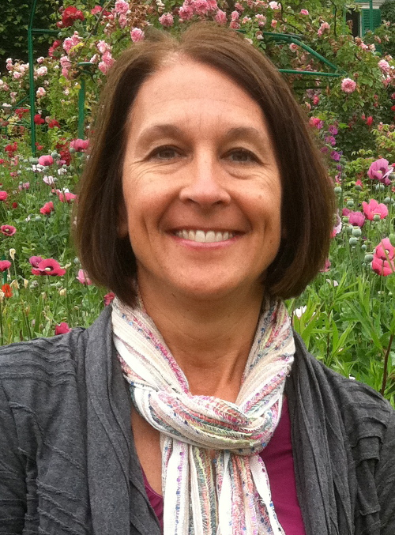
Carol Madison has been curious about other countries and cultures since her 7th grade geography class in Billings, Montana. After studying German and completing a B.A. in International Relations from Stanford University, Carol moved to the Washington, D.C. area in 1985. Carol still never tires of asking "What is your country of origin?" when encountering internationals in daily life. Mentoring young adults in their personal and spiritual lives has been an ongoing joy of Carol's over the past two decades. For some fifteen years now, Carol has volunteered with the National Student Leadership Forum, engaging college students and young professionals on the questions of life purpose and servant leadership. She also maintains an active relationship with a mentoring program for Tibetan youth in northern India. Carol serves on the board of Loving Haiti, a non-profit focused on relief and development in the community of Pignon, Haiti, and has previously served on two local non-profit school boards. Carol and her husband, George, reside in Arlington, Virginia. They both love hiking and adventure travel… especially cycling trips. They have two grown children.
 Alison McCaul developed a passion for teaching during three years on the JET Program serving as an English teacher in Nagasaki, Japan. She has taught ESL in Japan and India and has served as a volunteer ESL tutor in the Washington, D.C. area along with her teaching at English Now!. She has a B.A. in history from Radford University. Prior to teaching ESL, Alison worked as a Research Analyst at the International Monetary Fund. She traveled extensively to the African Indian Ocean countries for her work. While she enjoyed the challenge of work at the IMF, Alison decided teaching and interacting with ESL students was much more rewarding as a career. Alison enjoys the outdoors and spending time with her family. In addition to teaching, as an Educational Consultant, Alison works with high school students and families to help find their best college match. She holds a certificate in Independent Educational Consulting from UC Irvine and is a member of the Independent Educational Consultant Association (IECA), as well as the regional IECA of DC/MD/VA. Alison has traveled extensively and has lived with her husband and three young children in Madagascar and India. They all share a love of travel, language, and adventure. They reside in Bethesda, Maryland.
Alison McCaul developed a passion for teaching during three years on the JET Program serving as an English teacher in Nagasaki, Japan. She has taught ESL in Japan and India and has served as a volunteer ESL tutor in the Washington, D.C. area along with her teaching at English Now!. She has a B.A. in history from Radford University. Prior to teaching ESL, Alison worked as a Research Analyst at the International Monetary Fund. She traveled extensively to the African Indian Ocean countries for her work. While she enjoyed the challenge of work at the IMF, Alison decided teaching and interacting with ESL students was much more rewarding as a career. Alison enjoys the outdoors and spending time with her family. In addition to teaching, as an Educational Consultant, Alison works with high school students and families to help find their best college match. She holds a certificate in Independent Educational Consulting from UC Irvine and is a member of the Independent Educational Consultant Association (IECA), as well as the regional IECA of DC/MD/VA. Alison has traveled extensively and has lived with her husband and three young children in Madagascar and India. They all share a love of travel, language, and adventure. They reside in Bethesda, Maryland.
Cay Miller is a Bethesda native who began teaching at English Now! in 2005. Since 2009, she has been an ESOL teacher in Montgomery County Public Schools. She has a strong language education background, having earned a B.A. in linguistics from Haverford College in 2003, ESL teacher certification from Cambridge University (CELTA) in 2005, a M.A. in education from George Washington University in 2009, and National Board Professional Teaching Certification in 2013. She has experience teaching students of all levels in intensive, conversation, and private classes. In her free time, Cay enjoys coaching field hockey, traveling, and walking her dog Ozzy.
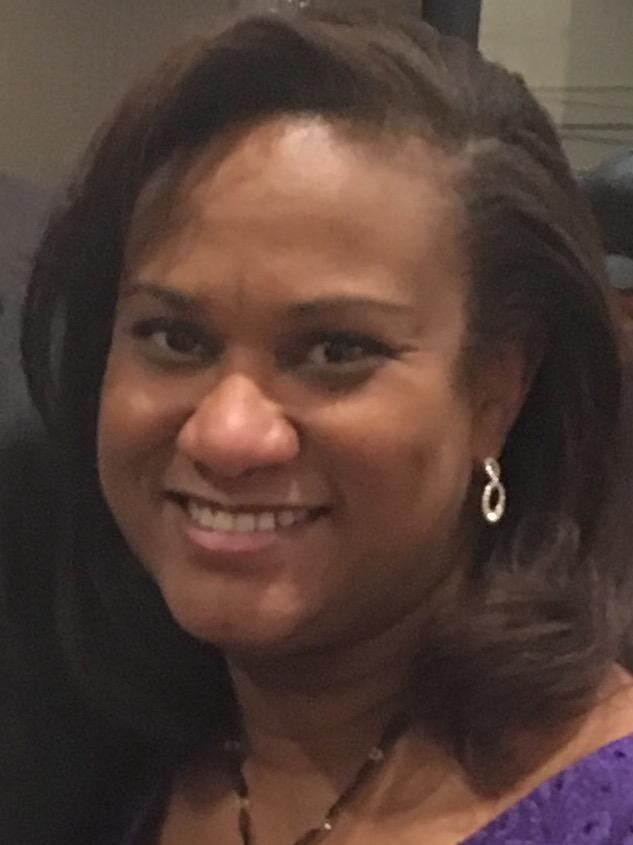
Cindy Newland is originally from New Orleans, Louisiana. As a very young child she moved with her family to Bangkok, Thailand to live for several years because her father was stationed there. Her family later moved to Venezuela, Mexico, and Bolivia. Cindy learned to speak Spanish during her many years living abroad as a child. After receiving her BBA in Business Management from Howard University, Cindy discovered a love of teaching English when she volunteered teaching ESL to adults in the evenings in Washington, D.C. After her daughter was born, she left her job as a Senior Sales Manager at a drug science organization and pursued teaching regularly. She now lives in Silver Spring, Maryland and has been teaching adult English for almost 14 years. She teaches all levels of ESL, including work on basic literacy with lower level students. She currently teaches ESL through a Montgomery County Public Schools program during the week and with English Now! in the afternoons and on Saturdays.
 Harriet Peck has worked in education all her adult life, teaching students from preschool through adulthood. She was a Title I teacher specialist for the Montgomery County, Maryland Public Schools and a reading teacher at Montgomery College, mainly working with ESL students. As a Title One specialist, she was involved in both teacher training and educating parents to help their children with learning at home. Harriet is a graduate of the University of Michigan. She loves to travel, and her hobbies include international folk dancing and volunteering as an art museum docent.
Harriet Peck has worked in education all her adult life, teaching students from preschool through adulthood. She was a Title I teacher specialist for the Montgomery County, Maryland Public Schools and a reading teacher at Montgomery College, mainly working with ESL students. As a Title One specialist, she was involved in both teacher training and educating parents to help their children with learning at home. Harriet is a graduate of the University of Michigan. She loves to travel, and her hobbies include international folk dancing and volunteering as an art museum docent.
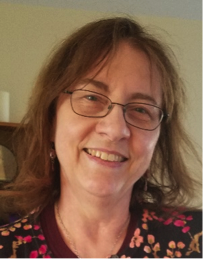
Peggy L. Preusch, PhD has enjoyed a wide variety of experiences in both informal and formal contexts for learning of science and science teaching. She most recently taught 6th grade science in Prince Georges County Public Schools. Because many students were learning English as a second language, development of student literacy in science was crucial to their learning process. Peggy developed lesson plans focused on vocabulary and students' reading, writing and thinking about science while they participated in hands-on and small group work. Her passion lies in teaching Environmental Science and the difference that field trips can make in the learning process, which was the topic of her doctoral dissertation at the University of Maryland. She has worked with students of all ages, from Pre-K to adult, including teaching pre-service educators as an Adjunct Professor at Towson University, and as a Graduate Assistant for the University of Maryland, College Park. She began her career as an environmental educator working for the Montgomery County Master Recycler/Composter Program during the start-up of the highly successful residential recycling program in the county. Environmental issues surrounding the Chesapeake Bay continue to be a focus of her life. After completing a Masters Degree in Environmental Biology at Hood College, she worked with farm owners throughout the state of Maryland to reduce nutrient input to agricultural lands, which has a direct effect on the water quality of the Chesapeake Bay. Peggy also enjoys playing flute in several flute choirs, and making quilts when she is not spending time playing with her grandchildren.
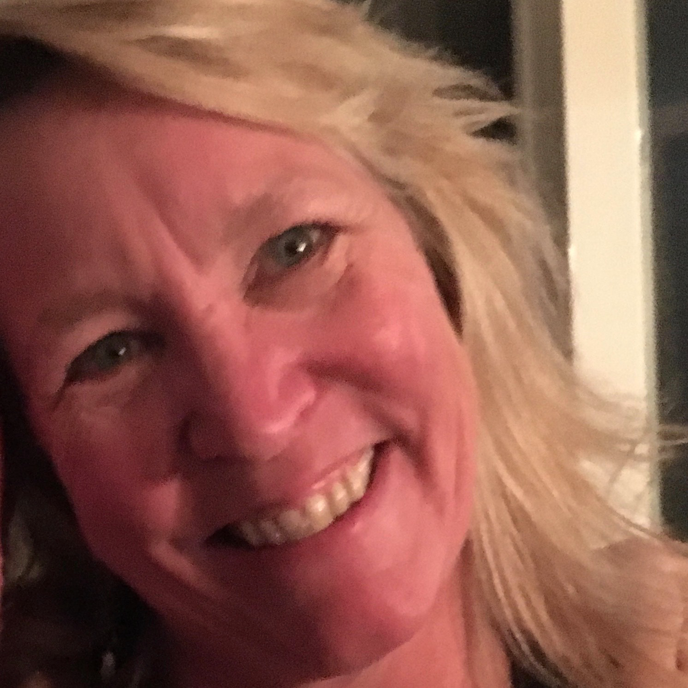
Jeannie Puentes has served as a volunteer, substitute teacher, and paraprofessional in lower primary-level classrooms for 15 years in the Falls Church City public school system. Jeannie's focus for her last 10 years in the public schools has been on special needs children and ESOL students. In addition to teaching at English Now!, she volunteers for So Others Might Eat and at the Falls Church Homeless Shelter; and she has also served as a volunteer instructor in the Falls Church After School ESOL Family Literacy Program and at the Arlington County women's' homeless shelter. Jeannie has a B.S. in Sociology from Old Dominion University and lives with her family in Falls Church, Virginia.
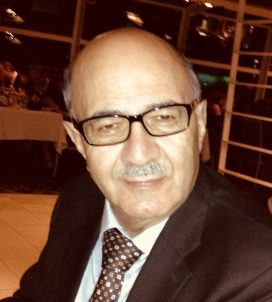
Hossein Razavi, PhD, has a longstanding passion for serving international students. Hossein previously worked as a chemist, including time spent as part of the Georgetown University faculty. During his academic career, he has always been interested in teaching English to international students and has frequently engaged in their orientation programs. At UCLA, he worked with the International Student Center to guide and help newly-arriving students get culturally acclimated and improve their English. At Georgetown, he worked with the International Students Office and tutored incoming international students. At Winthrop College, he worked with the Foreign Student Office to coordinate English programs for international students. More recently, he taught English from elementary to the advanced conversation levels at LADO International College. Hossein has a B.S., M.S. and Ph.D. degrees from UCLA, the University of Missouri, and Georgetown University, respectively.
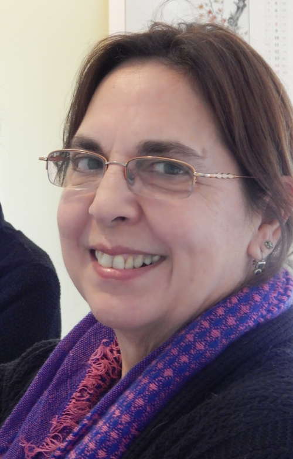
Cristina Rendueles-Stern was born in New York City and has had a rich and varied life. She lived as a young child in Manila, the Philippines; moved to Washington D.C., where she attended elementary school; and returned to New York City for high school and undergraduate studies at Marymount Manhattan College. Next was Madrid, Spain, where she taught English as a Foreign Language at the Casa Americana, before returning to the U.S. 11 years later to study at the Graduate School of Education at the University of Pennsylvania. After receiving her M.A. in Education, Cristina settled in Washington D.C., where she taught ESOL in the D.C. Public School System. Soon after this she took a teaching position for Montgomery County Public Schools, where she taught ESOL for 20 years. Cristina retired from MCPS in 2011 and has taught English at the Rockville Senior Center, International Language Institute, Linkages to Learning, the Cambridge Institute, and now English Now! Cristina has been married for 20 years and lives with her husband, stepson, two dogs, and three cats in Montgomery Village.
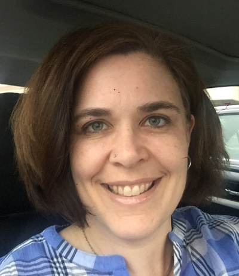
Mary Ann Ryan, who serves as an English language instructor, is a local girl: born in Washington, D.C. and raised in Kensington, MD. Mary Ann's first jaunt off the American continent was a two-week trip to Russia during high school in 1988. Raised in a family who valued travel and who hosted a variety of international guests, she later spent her junior year of college in Besançon, France, where her apartment mates hailed from Sudan, Hungary, Vietnam and, of course, France. Mary Ann graduated with degrees in English and French and is TEFL certified. A singer with many years of training, in 2012 she created the Takoma Porch music festival and is proud to say that she has been nominated for an Azalea Award in the "Community" category for three years in a row. Mary Ann recently returned from Costa Rica where she spent six months teaching English. Her particular passion in ESL instruction is in accent reduction.
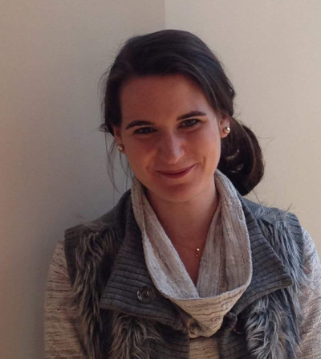
Elizabeth Quillin is eager to foster a creative and student centered learning environment for her language learners. Her passion for teaching and intercultural communication has taken her to China and Switzerland. In Beijing, she developed and taught an English immersion curriculum to a first grade, in English, to local Chinese with no prior English exposure. A Virginia native, she spent time developing curriculum and lesson plans at a private school in Arlington as well as tailoring individualized activities for students with special needs. Elizabeth enjoys traveling, people, baking, hiking and the Swiss Alps. She earned her B.A. in Journalism and Mass Communication from the University of Georgia, and is currently working towards a M.A. in Teaching English to Speakers of Other Languages (TESOL) from American University.
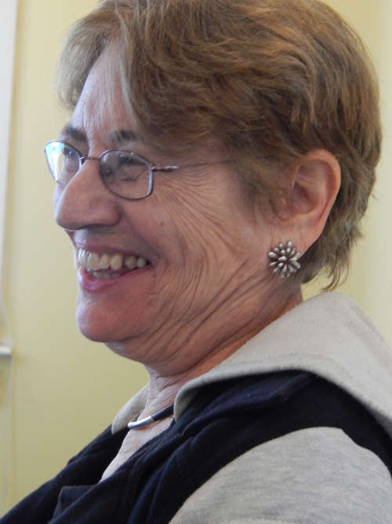
Laurel Reiner has a profoundly international background and brings a lifetime of perspective to the classroom. Laurel was born in Paris, France, spent the first four years of her life there, and then lived in Santiago, Chile between ages five and nine. By the age of nine, she spoke French and Spanish fluently, and she continued her international experience living in Costa Rica for two years in her early teens, then spent her junior year abroad in Israel where she studied Hebrew. Laurel has continued with Spanish and French and used Spanish professionaly for over 30 years, as a community organizer working for the United Farm Workers' Union, organizing John Kerry's Congressional campaign as his Latino organizer registering people to vote in Lowell and Lawrence, Massachusetts, and later in both those communities as a CETA worker. Laurel's ESL career began in 1975 after graduating from college and has continued in Massachusetts, California and in the D.C. area. She has taught, run a community ESL program for adults, and taught locally at Montgomery College, the Fairfax County Adult Education program, the Embassy of Japan, and at Japanese-affiliated businesses. She has also created a Spanish immersion program for workers at the AFL-CIO as well as at three hospitals in D.C. and Virginia. As additional elements of her diverse background, Laurel has also worked in fundraising and in program development with AmeriCorps, and in a local school as a bilingual social worker. Laurel has a Master's in Social Work.
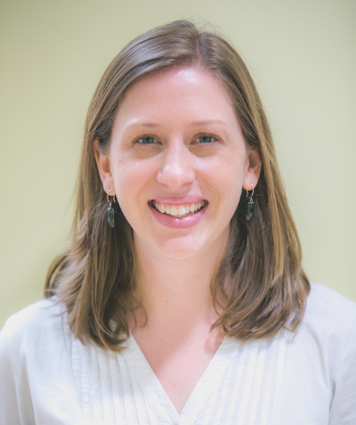
Julia Sivon Murillo is originally from Bethesda, Maryland but her second home is in Quito, Ecuador, where she spent more than five years living and working after college. While in Quito, Julia taught English as a Second Language to high school students, university students, and professionals and then used her experience to train other ESL teachers in Quito. In addition, Julia worked at a university in Quito designing and delivering short-term study abroad programs for international students. Her experience abroad fostered a passion for language learning and cross-cultural exchange. She loves working with students in a classroom to improve their English language skills as well as engaging in discussions of cultural influences and identity. She has a B.A. in International Studies and Spanish from Kenyon College and an M.A. from New York University in International Education.
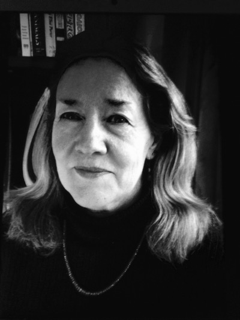
Nancy Traver is a long-time journalist and college instructor. After growing up in Denver, she graduated from the University of Colorado at Boulder with bachelor's degrees in journalism and English literature. She worked as a reporter for several small newspapers in Colorado before joining the Associated Press bureau in Denver. She then moved to New York, where she reported for Newsweek. In 1983, Nancy moved to Moscow, where she worked for the Associated Press and Time magazine for four years. Time transferred her to New York and then Washington, D.C., where she covered the White House, the State Department and Congress. She moved to Albuquerque in 1993, where she was an on-air reporter and assignment editor for a CBS affiliate and began teaching college journalism. Nancy moved to Chicago in 2000 and continued teaching and freelance writing. She has tallied 21 years of teaching college journalism and 25 years as a full-time journalist. Nancy currently lives in Silver Spring with her husband and two adult children.
 Jane Turner joined English Now! in August 2012 as an English conversation teacher and has been part of the morning intensive teaching team since June 2013. Jane lives in Rockville, Maryland, with her husband of 31 years, Catholic Deacon and retired broadcast technician, Al Turner. She has a BA degree in Radio Communications from Howard University in Washington, DC. Her lifetime experiences include, before marriage, a radio news broadcasting career in Washington, as a news anchor, field reporter, and assignment editor. She took up home-making full-time for her widower husband and his five small children. They raised two sons and three daughters to adulthood. Alongside a host of volunteer and entrepreneurial pursuits, Jane re-entered the workforce about ten years ago, teaching religion and substitute teaching at several middle schools in the Archdiocese of Washington with her catechist certification. Jane earned her TEFL certificate from Lado International College, Washington, DC. When she can find the time, Jane enjoys such outdoor activities as gardening and walking. Family time is the catalyst for much of her travels these days to keep up with 15 grandchildren, octogenarian parents, and other relatives around the country. Her current projects: family ancestry research and finishing a quilt begun 80 years ago by her maternal grandmother.
Jane Turner joined English Now! in August 2012 as an English conversation teacher and has been part of the morning intensive teaching team since June 2013. Jane lives in Rockville, Maryland, with her husband of 31 years, Catholic Deacon and retired broadcast technician, Al Turner. She has a BA degree in Radio Communications from Howard University in Washington, DC. Her lifetime experiences include, before marriage, a radio news broadcasting career in Washington, as a news anchor, field reporter, and assignment editor. She took up home-making full-time for her widower husband and his five small children. They raised two sons and three daughters to adulthood. Alongside a host of volunteer and entrepreneurial pursuits, Jane re-entered the workforce about ten years ago, teaching religion and substitute teaching at several middle schools in the Archdiocese of Washington with her catechist certification. Jane earned her TEFL certificate from Lado International College, Washington, DC. When she can find the time, Jane enjoys such outdoor activities as gardening and walking. Family time is the catalyst for much of her travels these days to keep up with 15 grandchildren, octogenarian parents, and other relatives around the country. Her current projects: family ancestry research and finishing a quilt begun 80 years ago by her maternal grandmother.
Frances Williams serves as a Community Relations Manager & English Language Instructor. Originally from Scotland, Frances graduated from Dunfermline College in Edinburgh with a Bachelor's degree in Education. Her childhood dream of travelling overseas was fulfilled when she got her first job teaching in Ghana. Later, while teaching in India, she met her husband-to-be, a State Department Foreign Service Officer. Together, with their son and several ever-changing, rescued street dogs, they have been on the move ever since! Frances has taught in International schools in Copenhagen, Curacao, Damascus, Havana and Santiago as well as private and public schools in Montgomery County. While teaching overseas, Frances was involved in organizing many “Week Without Walls” and outreach programs for her students, which were designed to give them experiences that would inspire them to become caring, global citizens. Her most memorable one was when she took 20 middle school students camel trekking into the Syrian Desert to live among Bedouin families. In addition to working at English Now!, Frances also manages an after-school homework club at a youth center. There, she tutors a diverse group of middle and high school students in Social Studies and Language Arts. In her spare time she plays tennis, plays clarinet in a band and takes care of her three bi-lingual dogs!
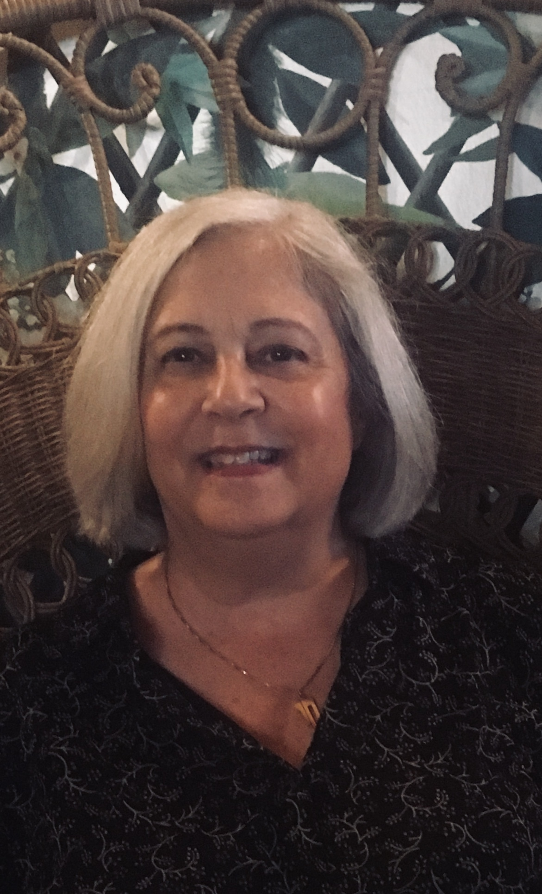
Nancy L. Wolf is thrilled to join English Now! as an instructor and looks forward to teaching English Language classes as well as English for Workplace Communications, Legal English, Business English and hopes to learn to prep students for the TOEFL and TOEIC tests as well. She has always been a life-long learner. After growing up in Fairfield, Connecticut, Nancy went to Smith College where she majored in Latin American Studies and then to The Fletcher School of Law and Diplomacy (Tufts University) to get her Masters Degree. Not content with two degrees, Nancy then went to law school at George Washington University to obtain her J.D. and spent many years as a lawyer with and partner at two DC firms where she specialized in communications law. Her favorite clients were nationwide radio station companies who needed her skillfully creative advice to keep them out of regulatory hot water. After leaving the law, Nancy returned to her first love – the classroom. She’s taught ESL at the Washington English Center since 2017 and expects to receive her TEFL Certificate from Georgetown University in May, 2019. When not preparing lesson plans, Nancy reads and writes, loyally attends meetings of her book club and writers group and watches British crime series on Netflix. Nancy met her husband, Jim Pavle, on the first day of graduate school. He is a native speaker of Macedonian and Nancy knows a few choice words in that language. Nancy and Jim have lived in Chevy Chase, Maryland for over 35 years; they have two adult children, two brilliant grandchildren and a very special, 13-year-old three-legged rescue dog named Howie.
For more information about English Now! and our unique approach to English language study, please visit the school or contact us.